在数学中，矩阵（Matrix）是一个按照长方阵列排列的实数或复数集合，最早来自于方程组的系数及常数所构成的方阵。
矩阵的研究历史悠久，拉丁方阵和幻方在史前年代已有人研究。在东汉前期的《九章算术》中，用分离系数法表示线性方程组，得到了其增广矩阵（线性方程组中未知量的系数加上常数项排列成的一个矩阵）。在消元过程中，使用的把某行乘以某一非零实数、从某行中减去另一行等运算技巧，相当于矩阵的初等变换。矩阵的一个重要用途就是解线性方程组。另外，矩阵还可以用来表示线性变换，以及图论模型及算法中关联矩阵的二元运算等方面。
矩阵正式作为数学中的研究对象出现，是在行列式的研究发展起来后。逻辑上，矩阵的概念先于行列式，但实际上恰好相反。矩阵的概念由19世纪英国数学家凯利首先提出，他也被公认为矩阵论的奠基人。他开始将矩阵作为独立的数学对象研究时，许多与矩阵有关的性质已经在行列式的研究中被发现了。他说：“我决然不是通过四元数而获得矩阵概念的；它或是直接从行列式的概念而来，或是作为一个表达线性方程组的方便方法而来的。”他从1858年开始，发表了《矩阵论的研究报告》等一系列关于矩阵的专门论文，研究了矩阵的运算律、矩阵的逆以及转置和特征多项式方程。凯利还提出了凯利-哈密尔顿定理，并验证了3×3矩阵的情况，又说进一步的证明是不必要的。哈密尔顿证明了4×4矩阵的情况，而一般情况下的证明是德国数学家弗罗贝尼乌斯于1898年给出的。1854年时法国数学家埃尔米特使用了“正交矩阵”这一术语，但他的正式定义直到1878年才由弗罗贝尼乌斯发表。1879年，弗罗贝尼乌斯引入“矩阵秩”的概念。至此，矩阵的体系基本上建立起来了。
矩阵是高等代数学中的常见工具，也常见于统计分析等应用数学学科中，矩阵的运算是数值分析领域的重要问题。在物理学中，矩阵在电路学、力学、光学和量子物理中都有应用。在计算机科学中，三维动画制作也需要用到矩阵。
由m×n个数aij 排成的m行n列的数表称为m行n列的矩阵，简称m×n矩阵。记作：
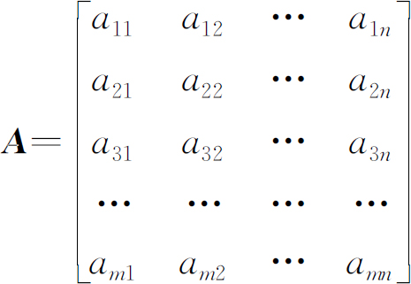
这m×n个数称为矩阵A 的元素，简称为元。数aij 位于矩阵A 的第i行第j列，称为矩阵A 的（i，j）元，以数aij 为（i，j）元的矩阵可记为（aij ）或（aij ）m×n ，m×n矩阵A 也记作A mn 。
元素是实数的矩阵称为实矩阵，元素是复数的矩阵称为复矩阵。而行数与列数都等于n的矩阵称为n阶矩阵或n阶方阵。n阶方阵中所有i=j的元素aij 组成的斜线称为（主）对角线，所有i+j=n+1的元素aij 组成的斜线称为辅对角线。
矩阵的基本运算包括加法、减法、数乘、转置、共轭和共轭转置等。
1．加法与减法
对于两个同型（行列数一样）矩阵A 和B ，加法就是把对应（i，j）元做加法运算。例如：
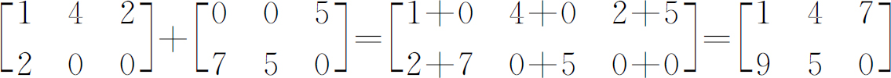
矩阵的加法运算满足结合律和交换律，即：
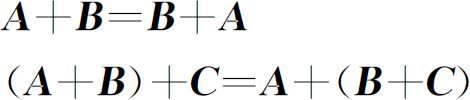
矩阵的减法与加法运算类似，例如：
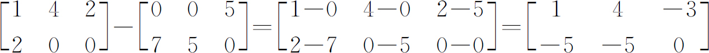
2．数乘
矩阵的数乘是指一个数乘以一个矩阵，只要把这个数乘到每一个（i，j）元上。例如：
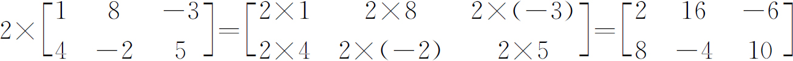
矩阵的数乘运算满足结合律和分配律，即：
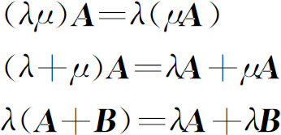
矩阵的加法、减法和数乘运算合称为矩阵的“线性”运算。
3．转置
把矩阵A的行换成同序数的列所得到的新矩阵称为A的转置矩阵，这一过程称为矩阵的转置。例如：
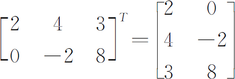
矩阵的转置运算满足以下运算律：
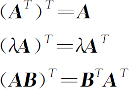
4．共轭
对于复矩阵，其共轭矩阵定义为：
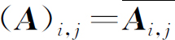
。例如，一个2×2复矩阵的共轭如下所示：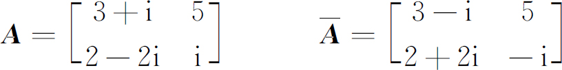
5．共轭转置
矩阵的共轭转置定义为：
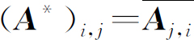
，也可以写成：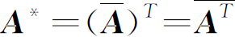
。例如，一个2×2复矩阵的共轭转置如下所示：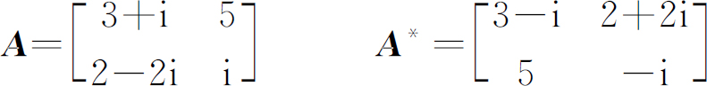
两个矩阵的乘法仅当第一个矩阵A 的列数和第二个矩阵B 的行数相等时才能定义。如A 是m×n矩阵、B 是n×p矩阵，它们的乘积C 是一个m×p矩阵C =(cij )，它的任意一个元素值为：
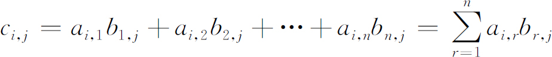
并将此乘积记为：C =AB 。例如：
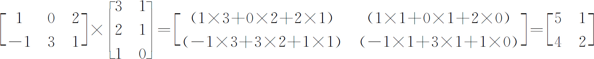
矩阵的乘法运算满足结合律、左分配律、右分配律，但是不满足交换律。即：
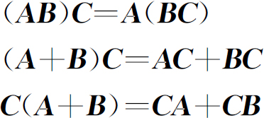
一个n×n的方阵A 的行列式记为det（A ）或者|A |，一个2×2矩阵的行列式可表示如下：
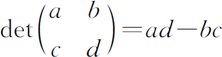
把一个n阶行列式中的元素aij 所在的第i行和第j列划去后，留下来的n-1阶行列式叫做元素aij 的余子式，记作M ij 。记A ij =（-1）i+j M ij ，叫做元素aij 的代数余子式。例如：
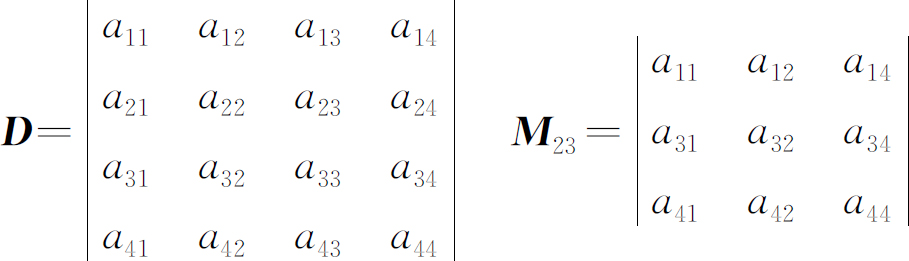
A23 =（-1）2+3 M 23 =-M 23 。
一个n×n矩阵的行列式等于其任意行（或列）的元素与对应的代数余子式乘积之和，即：
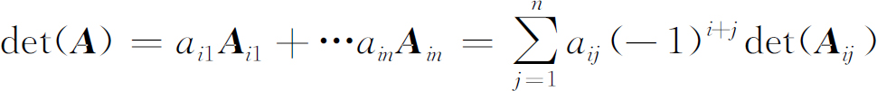
对角矩阵（Diagonal Matrix）是一个主对角线之外的元素皆为 0 的矩阵，记为diag（a11 ，a22 ，…，ann ）。
三角矩阵分上三角矩阵和下三角矩阵两种。上三角矩阵的对角线左下方的系数全部为零（如下矩阵U ），下三角矩阵的对角线右上方的系数全部为零。三角矩阵可以看做是一般方阵的一种简化情形。比如，由于带三角矩阵的矩阵方程容易求解，在解多元线性方程组时，总是将其系数矩阵通过初等变换化为三角矩阵来求解；又如三角矩阵的行列式就是其对角线上元素的乘积，很容易计算。有鉴于此，在数值分析等分支中三角矩阵十分重要。
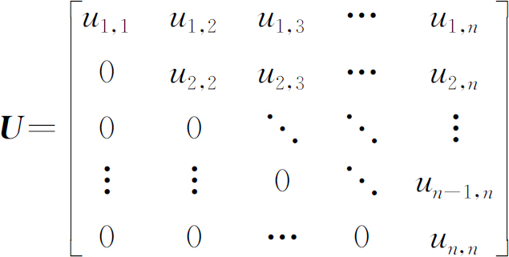
对称矩阵是一个方阵，其转置矩阵和自身相等，即A =A T 。对称矩阵中关于主对角线对称的每一对元素均相等。如果A =-A T ，则称为反对称矩阵。
n阶复方阵A 的对称单元互为共轭，即A 的共轭转置矩阵等于它本身，则A 是厄米特矩阵（Hermitian Matrix）。例如：矩阵
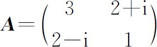
就是一个自共轭矩阵。显然，埃尔米特矩阵主对角线上的元素都是实数，其特征值也是实数。对于只包含实数元素的矩阵（实矩阵），如果它是对称阵，即所有元素关于主对角线对称，那么它也是埃尔米特矩阵。也就是说，实对称矩阵是埃尔米特矩阵的特例。如果埃尔米特矩阵的特征值都是正数，那么这个矩阵是正定矩阵，若它们是非负的，则这个矩阵是半正定矩阵。A 是一个n阶实矩阵，若A T A =E（或A A T =E），则称A 为正交矩阵。如果A 是一个正交矩阵，则｜A ｜=+1或-1；A 可逆，且其逆A －1 也是正交矩阵；A T 和A *也是正交矩阵；A m （m为自然数）也是正交矩阵。
范德蒙矩阵（Vandermonde矩阵）是一个各列呈现出几何级数关系的矩阵。例如：
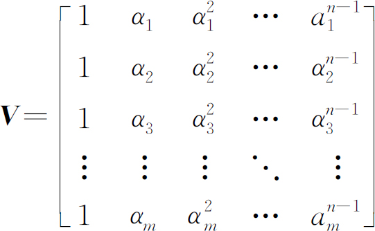
或以第i行第j列的关系写作：
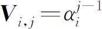
。范德蒙矩阵的重要应用就是纠错编码，例如常用的纠错码Reed-Solomon 编码中冗余块的编码采用的即为范德蒙矩阵。【例6.1-1】 普通递推数列（recurrence．*，128MB，1秒）
【问题描述】
给出一个k阶齐次递推数列{fi }的通项公式fi =a1 fi-1 +a2 fi-2 +…+ak fi-k (i≥k)，以及初始值f0 ,f1 ,…,fk-1 ，求fn 。
【输入格式】
第1行2个整数：n(0≤n≤1000000)和k(1≤k≤100)。
第2行k个整数：a1 ,a2 ,…,ak (0≤ai ≤10000,1≤i≤k)。
第3行k个整数：f0 ,f1 ,…,fk-1 (0≤fi ＜10000,0≤i＜k)。
【输出格式】
一行一个整数p，是fn 除以10000的余数。
【输入样例】
10 2
1 1
1 1
【输出样例】
89
【问题分析】
从n和k的数据规模可以判断，逐项递推是要超时的。下面，我们从一个最简单的特例Fibonacci数列着手，看看如何进行递推优化。
Fibonacci数列的递推公式为：
fi =fi-1 +fi-2
我们令：
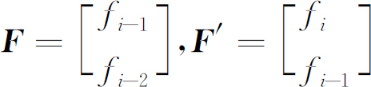
另外，再设一个矩阵A ，使得：
F′=A·F
很容易，找出以下矩阵A 满足要求：
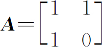
进而，若有：
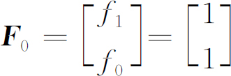
则：
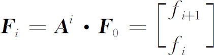
经过这样的变换，尽管从表面上看仍然需要n步的计算才能得到F n ，但由于矩阵乘法满足结合律，我们可以像计算一个整数的非负整数次幂那样，通过分治来计算一个矩阵的非负整数次幂，从而求出F n 。
扩展至一般情况，若：
fi =a1 fi-1 +a2 fi-2 +…+ak fi-k
同样地，我们令：
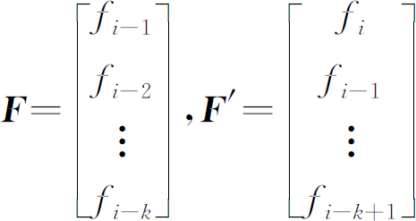
另外，再设一个矩阵A ，使得F ′=A·F 。通过比较，我们可以得出：
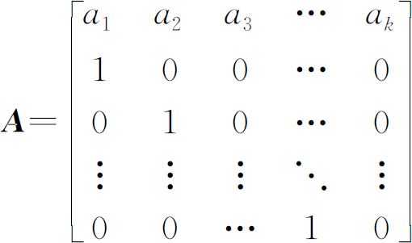
于是，若有：
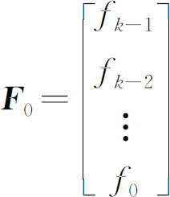
则：
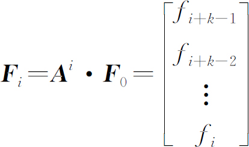
这样，我们同样也能用分治的方法来求得F n 。
通过使用矩阵乘法，整个算法的时间复杂度为Θ(k3 log2 n)，空间复杂度为Θ(k2 )。如果在矩阵相乘时使用Strassen算法，时间复杂度还可以进一步降为Θ(k2.81 log2 n)。
【参考程序】
#include＜bits/stdc++．h＞
using namespace std;
int read（）{
int s=0，f=1;char ch=getchar（）;
while（ch＜'0'｜｜ch＞'9'）{if（ch=='-'）f=-1;ch=getchar（）;}
while（ch＞='0'＆＆ch＜='9'）{s=（s＜＜1）+（s＜＜3）+ch-'0';ch=getchar（）;}
return s*f;
}
const int max_n=100，max_m=100;
int mod=10000;
struct matrix{
int n，m;
long long s［max_n］［max_m］;
matrix（）{clean（）;}
void clean（）{
n=max_n，m=max_m;
for（int i=0;i＜max_n;i++）
for（int j=0;j＜max_m;j++）
s［i］［j］=0;
}
}A，F0;
long long ss［max_n］;
matrix operator*（matrix a，matrix b）{
matrix c;
if（a．m!=b．n）{return c;}
c．n=a．n，c．m=b．m;
for（int j=0;j＜c．m;j++）{
for（int i=0;i＜c．n;i++）ss［i］=b．s［i］［j］;
for（int i=0;i＜c．n;i++）{
for（int k=0;k＜a．m;k++）
c．s［i］［j］+=a．s［i］［k］*ss［k］;
c．s［i］［j］%=mod;
}
}
return c;
}
matrix pow（matrix a，int b）{
matrix ans;ans．n=ans．m=a．n;
for（int i=0;i＜a．n;i++）
for（int j=0;j＜a．n;j++）
ans．s［i］［j］=（i==j）;
for（;b;b＞＞=1，a=a*a）
if（b＆1）
ans=ans*a;
return ans;
}
int n，k;
int main（）{
n=read（），k=read（）;
for（int i=0;i＜k;i++）
A．s［0］［i］=read（）;
for（int i=1;i＜k;i++）
A．s［i］［i-1］=1;
for（int i=0;i＜k;i++）
F0．s［k-i-1］［0］=read（）;
A．n=A．m=k;F0．n=k，F0．m=1;
if（n＜k）
{printf（"%d＼n"，int（F0．s［k-n-1］［0］））;
return 0;
}
matrix dd=pow（A，1）;
printf（"%d＼n"，int（（pow（A，n-k+1）*F0）．s［0］［0］））;
return 0;
}
【例6.1-2】 染色（color．*，256MB，1秒）
【问题描述】
最近小x很happy，她制作了一些小旗，小旗都排成一列。现在她有四种颜色分别为R、B、W、Y。突发奇想的小x决定出个问题考考你。她想知道，n面小旗染色有多少种不同的方案数。这样太简单了，答案不就是4n 吗!于是，她加了5个限制条件，分别要求：
1．相邻两面旗染色不相同；
2．R，B两种颜色不能相邻；
3．Y，W两种颜色不能相邻；
4．R，W，B不能在一起。即不能出现连续三个是RWB的排列；
5．正反一样的算一种。
但是，小x觉得这样还是太简单了，于是她定义f（n）为n面红旗的方案数，她给你L和R两个正整数，让你计算以下式子：
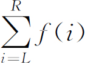
由于答案太大，你只需要mod 1000000007即可。
【输入格式】
输入文件一行两个正整数L和R，保证L≤R。
【输出格式】
输出文件只有一行一个整数。
【输入输出样例】
| color．in | color．out |
| 3 4 | 23 |
| 5 6 | 64 |
【解释样例】
对于样例1的解释：
3 面小旗： BWB，BYB，BYR，RWR，RYR，WBW，WBY，WRW，WRY，YBY，YRY （11 种）。
4 面小旗： BWBW，BWBY，BYBW，BYBY，BYRW，BYRY，RWRW，RWRY，RYBW，RYBY，RYRW，RYRY （12 种）。
所以答案为11+12=23种。
【数据范围】
对于10%的数据满足：1≤L≤R≤10；
另有40%的数据满足：R-L+1≤10；
对于100%的数据满足：1≤L≤R≤109 。
【问题分析】
先不考虑L～R，只考虑长度为len的。设a［i］表示位置i的方案,a［i］［j］表示i～j的方案。可以设计出一个状态压缩的动态规划方程来，设F［i］［j］表示长度为i、状态为j的方案种数，因为只和目前最后的两个flag有关，因此，j只要表示最后两个flag的状态即可，一共只有8种。这样，限制条件1、2、3、4都能解决，如何满足条件5呢？分析发现，偶数无论如何都不会形成回文的（相邻不同）。考虑奇数，回文的方案数就是DP算长度为（len+1）/2时的方案数（若a［k］=a［len-k+1］（1≤k≤len/2）,则当前串满足条件5，a［1］［（len+1）/2］和a［（len+1）/2］［len］满足条件1-4，则当前串满足条件1-3，又因为flag［（len+1）/2-1］=flag［（len+1）/2+1］，则当前串满足条件4）。综上所述，长度为len答案就是（f［len］+f［（len+1）/2］）/2（len是奇数）或者f［len］（len是偶数）。因为L，R≤109 ，所以，要使用矩阵乘法来实现。
设
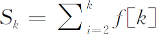
，那么答案就是(SR +S(R+1)/2 -SL-1 -SL/2 )/2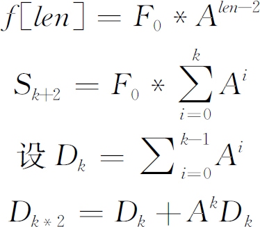
至此，可以对A、D预处理后，用类似快速幂的方法求出S。
【参考程序】
#include＜bits/stdc++．h＞
using namespace std;
int read（）{
int s=0，f=1;char ch=getchar（）;
while（ch＜′0′｜｜ch′9′）{if（ch==′-′）f=-1;ch=getchar（）;}
while（ch＞=′0′＆＆ch＜=′9′）{s=（s＜＜1）+（s＜＜3）+ch-′0′;ch=getchar（）;}
return s*f;
}
const int max_n=8，max_m=8;
int mod=1000000007;
struct matrix{
int n，m;
long long s［max_n］［max_m］;
matrix（）{clean（）;}
void clean（）{
n=max_n，m=max_m;
for（int i=0;i＜max_n;i++）
for（int j=0;j＜max_m;j++）
s［i］［j］=0;
}
}A［30］，D［30］，F0;
long long ss［max_n］;
matrix operator*（matrix a，matrix b）{
matrix c;
if（a．m!=b．n）{return c;}
c．n=a．n，c．m=b．m;
for（int j=0;j＜c．m;j++）{
for（int i=0;i＜c．n;i++）ss［i］=b．s［i］［j］;
for（int i=0;i＜c．n;i++）{
for（int k=0;k＜a．m;k++）
c．s［i］［j］+=a．s［i］［k］*ss［k］;
c．s［i］［j］%=mod;
}
}
return c;
}
matrix operator+（matrix a，matrix b）{
matrix c;
c．n=a．n，c．m=a．m;
for（int i=0;i＜c．n;i++）
for（int j=0;j＜c．m;j++）
c．s［i］［j］=a．s［i］［j］+b．s［i］［j］，
c．s［i］［j］-=（c．s［i］［j］＞=mod？mod∶0）;
return c;
}
matrix pow（matrix a，int b）{
matrix ans;ans．n=ans．m=a．n;
for（int i=0;i＜a．n;i++）
for（int j=0;j＜a．n;j++）
ans．s［i］［j］=（i==j）;
for（;b;b＞＞=1，a=a*a）
if（b＆1）
ans=ans*a;
return ans;
}
int pow2（long long a，int b）{
long long ans=1;
for（;b;b＞＞=1，a=a*a%mod）
if（b＆1）
ans=ans*a%mod;
return ans;
}
int L，R;
matrix S（int k）{
matrix AA，DD;AA．n=AA．m=8;
for（int i=0;i＜8;i++）AA．s［i］［i］=1;
DD．n=DD．m=8;
for（int i=29;i＞=0;i--）
if（（k＞＞i）＆1）
DD=DD+AA*D［i］，
AA=AA*A［i］;
return DD;
}
int calc（int len）{
if（len==1）return 4;
long long sum=0;
matrix Fn=S（len-1）*F0;
for（int i=0;i＜8;i++）
sum+=Fn．s［i］［0］;
return （sum+4）%mod;
}
int main（）
{ // 0 1 2 3 4 5 6 7
A［0］．n=A［0］．m=8;//RBWY RW RY BW BY WR WB YR YB
A［0］．s［0］［4］=1，A［0］．s［0］［6］=1;
A［0］．s［1］［4］=1，A［0］．s［1］［6］=1;
A［0］．s［2］［5］=1，A［0］．s［2］［7］=1;
A［0］．s［3］［5］=1，A［0］．s［3］［7］=1;
A［0］．s［4］［0］=1，A［0］．s［4］［2］=0;
A［0］．s［5］［0］=0，A［0］．s［5］［2］=1;
A［0］．s［6］［1］=1，A［0］．s［6］［3］=1;
A［0］．s［7］［1］=1，A［0］．s［7］［3］=1;
for（int i=1;i＜30;i++）
A［i］=A［i-1］*A［i-1］;
F0．n=8，F0．m=1;
for（int i=0;i＜8;i++）
F0．s［i］［0］=1;
D［0］．n=D［0］．m=8;
for（int i=0;i＜8;i++）
D［0］．s［i］［i］=1;
for（int i=1;i＜30;i++）
D［i］=D［i-1］+A［i-1］*D［i-1］;
L=read（），R=read（）;
printf（"%d＼n"，int（（（long long）calc（R）+calc（（R+1）/2）-calc（L-1）-calc（L/2）+mod）*pow2（2，mod-2）%mod））;
return 0;
}
在信息学奥赛中，常常遇到各种形式的N阶数字方阵问题。从数据结构角度看，方阵是二维数组。从数学角度看，方阵中的元素可看作函数f(i,j)的值。解决这类问题通常有两种方法，一种是模拟法，按照自然数（或符号）递增（或递减）排列的顺序控制下标，逐一填入自然数（或符号）。另一种是归纳法（或函数法），通过归纳类比来发现方阵排列的规律，找出方阵中元素与下标的对应关系，建立函数。模拟法与归纳法各有优劣。为了方便阐述，我们约定f(i,j)表示方阵中的（i，j）元。首先，可以归纳出一些N阶方阵的基本变化规律：
（1）垂直对称f′(i,j)=f(i,n+1-j)：
（2）水平对称f′(i,j)=f(n+1-i,j)：
（3）对角线对称（主对角线）f′(i,j)=f(j,i)：
（4）对角线对称（辅对角线）f′(i,j)=f(n+1-i,n+1-i)：
将以上基本变化合并后，可以产生其他对称旋转等变化。例如：
（1）中心对称：将水平变化和垂直变化合并，f′(i,j)=f(n+1-i,n+1-j)
（2）顺时针旋转90度：将水平对称和对角线对称合并，f′(i,j)=f(n+1-j,i)
（3）逆时针旋转90度：将垂直对称和对角线对称合并，f′(i,j)=f(j,n+1-i)
【例6.2-1】 N阶奇数幻方（njjshf．*，128MB，1秒）
【问题描述】
输入N（N≤20，奇数），输出一个“N阶奇数幻方”。如N=5，输出如下：
17 24 1 8 15
23 5 7 14 16
4 6 13 20 22
10 12 19 21 3
11 18 25 2 9
【问题分析】
分析“5阶奇数幻方”，发现每一行5个数字的和、每一列5个数字的和、两条对角线的5个数字都等于（1+2+3+…+25）/5=65。
如何生成“N阶奇数幻方”呢？归纳法一时难于找到函数f(i,j)的规律，于是尝试采用模拟法。模拟法的一般结构如下：
第1个数的位置［i，j］初始化;
穷举step（1到N2
），每次做：
｛
将step填到a［i，j］；
inc（step）；
根据规律找到下个数所在的位置，即修改i，j的值；
｝
【参考程序】
#include＜bits/stdc++．h＞
using namespace std;
int n;
int f［20］［20］;
void solve（int step，int i，int j）{
if（step==n*n+1）return;
f［i］［j］=step;
if（f［（i-1+n）%n］［（j+1）%n］）
solve（step+1，（i+1）%n，j）;
else
solve（step+1，（i-1+n）%n，（j+1）%n）;
}
int main（）{
scanf（"%d"，＆n）;
solve（1，0，n/2）;
for（int i=0;i＜n;i++，puts（""））
for（int j=0;j＜n;j++）
printf（"%4d"，f［i］［j］）;
return 0;
}
【例6.2-2】 N阶斜线方阵（njxxfz．*，128MB，1秒）
【问题描述】
输入N（N≤20），输出一个“斜线方阵”。如N=5，输出如下：
1 2 4 7 11
3 5 8 12 16
6 9 13 17 20
10 14 18 21 23
15 19 22 24 25
【问题分析】
本题可以采用模拟法。把整个方阵看成2n-1条“从右上到左下的斜线”，然后按顺序逐条斜线逐个数的去填，具体实现详见“参考程序1”。
本题也可以采用归纳法。观察发现，此方阵按斜线方向分布，共 2n-1个斜行，斜行号为：i+j-1。每一斜行数的个数分别为：1，2，3…n-1，n，n-1…3，2，1。为了计算f(i,j)，可将方阵分为两部分：左上部分和右下部分。左上部分每一斜行的自然数个数即为斜行号，计算f(i,j)只需将前i+j-2斜行的元素个数相加（即
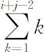
），再加上（i，j）在斜行中的位置（即i）。右下部分直接计算比较复杂，可以根据对称性来计算。综合以上分析可以得到以下f(i,j)：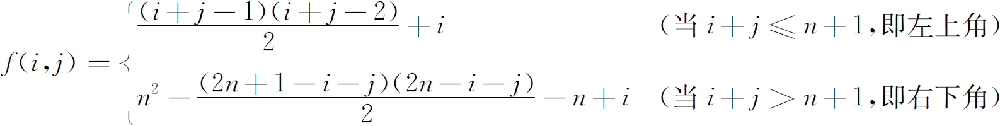
或把右下角改成：f(i,j)=n*n+1-f[n+1-i,n+1-j]
【参考程序1】
#include＜bits/stdc++．h＞
using namespace std;
int n，step;
int f［21］［21］;
int main（）{
scanf（"%d"，＆n）;
for（int i=1;i＜=n;i++）
for（int j=1;j＜=i;j++）
f［j］［i+1-j］=++step;
for（int i=2;i＜=n;i++）
for（int j=i;j＜=n;j++）
f［j］［i+n-j］=++step;
for（int i=1;i＜=n;i++，puts（""））
for（int j=1;j＜=n;j++）
printf（"%4d"，f［i］［j］）;
return 0;
}
【参考程序2】
#include＜bits/stdc++．h＞
using namespace std;
int n，step;
int f［21］［21］;
int main（）{
scanf（"%d"，＆n）;
for（int i=1;i＜=n;i++）
for（int j=1;j＜=n;j++）
if（i+j＜=n+1）
f［i］［j］=（i+j-1）*（i+j-2）/2+i;
else
f［i］［j］=n*n-（2*n+1-i-j）*（2*n-i-j）/2-n+i;
for（int i=1;i＜=n;i++，puts（""））
for（int j=1;j＜=n;j++）
printf（"%4d"，f［i］［j］）;
return 0;
}
【例6.2-3】 N阶螺旋方阵（njlxfz．*，128MB，1秒）
【问题描述】
输入N（N≤20），输出一个“螺旋方阵”。如N=5，输出如下：
1 2 3 4 5
16 17 18 19 6
15 24 25 20 7
14 23 22 21 8
13 12 11 10 9
【问题分析】
观察可发现，此方阵的规律为由外向内逐层螺旋填数，不妨设由外向内依次为第1层，第2层，…。可以发现以下规律：
（1）每层均为正方形，螺旋方向为顺时针；
（2）第1层边长为n，第2层边长为n-2，…，第p层边长为n-2p；
（3）第1层数字个数为4（n-1），第2层数字个数为4（n-3），…，第p层数字个数为4（n-2p+1）。
这些都是比较直观的规律，由此可以推导出，前p-1层共有数字
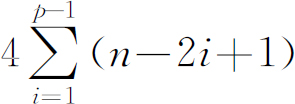
第p层第一个数字（下标（p，p））为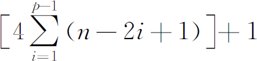
，为了输出这个方阵，需要考虑更一般的问题：对任意下标（i，j）对应什么数字？首先考察（i，j）位于第几层（记为p）。观察发现，（i，j）位于最靠近外围的那一层上，即p=min(i,j,n+1-i,n+1-j)。
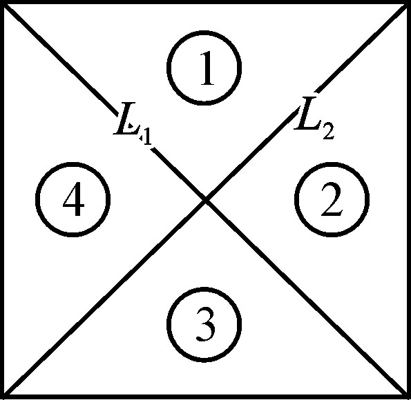
图6.2-1 方阵分区
其次考察（i，j）位于该层第几个数字？为了方便，将方阵分为四个区（如图6.2-1所示），直线L1 ∶i=j；L2 ∶i+j=n+1；
（1）位于L1 右方，L2 左方，第j-p+1个数字；
（2）位于L1 右方，L2 右方，第n-2p+i-p+2个数字；
（3）位于L1 左方，L2 右方，第2（n-2p+1）+n-j-p+2个数字；
（4）位于L1 左方，L2 左方，第3（n-2p+1）+n-i-p+2个数字。
【参考程序1】
#include＜bits/stdc++．h＞
using namespace std;
int n，step，x，y，dir;
int dx［4］={0，1，0，-1}，dy［4］={1，0，-1，0};
int f［22］［22］;
int main（）{
scanf（"%d"，＆n）;
for（int i=0;i＜=n+1;i++）
for（int j=0;j＜=n+1;j++）
if（i==0｜｜j==0｜｜i==n+1｜｜j==n+1）
f［i］［j］=-1;
x=1，y=1，dir=0;
f［x］［y］=1;
for（int i=2;i＜=n*n;i++）{
for（;f［x+dx［dir］］［y+dy［dir］］;dir++，dir＆=3）;
x+=dx［dir］，y+=dy［dir］;
f［x］［y］=i;
}
for（int i=1;i＜=n;i++，puts（""））
for（int j=1;j＜=n;j++）
printf（"%4d"，f［i］［j］）;
return 0;
}
＜b＞【参考程序2】＜/b＞
#include＜bits/stdc++．h＞
using namespace std;
int n;
int f［22］［22］;
int main（）{
scanf（"%d"，＆n）;
for（int i=1;i＜=n;i++）
for（int j=1;j＜=n;j++）{
int p=min（min（i，j），min（n+1-j，n+1-i））;
f［i］［j］=4*（（n-p+1）*（p-1））;
if（j＞=i）
if（i+j＜=n+1）
f［i］［j］+=j-p+1;
else
f［i］［j］+=n-3*p+i+2;
else
if（i+j＜=n+1）
f［i］［j］+=4*n-i-7*p+5;
else
f［i］［j］+=3*n-j-5*p+4;
}
for（int i=1;i＜=n;i++，puts（""））
for（int j=1;j＜=n;j++）
printf（"%4d"，f［i］［j］）;
return 0;
}
一般来说，线性方程组形式如下：
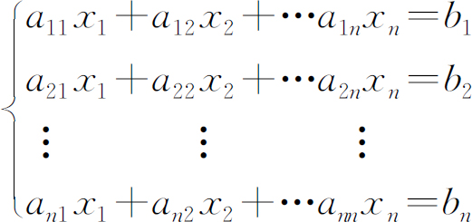
常记为以下矩阵形式：
A x=B
其中：
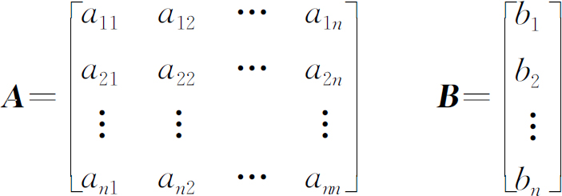
在工程技术和工程管理中有许多问题经常可以归结为线性方程组类型的数学模型，这些模型中方程和未知量个数常常有多个，而且方程个数与未知量个数也不一定相同。那么这样的线性方程组是否有解呢？如果有解，解是否唯一？若解不唯一，解的结构如何呢？ 利用矩阵来讨论线性方程组的解的情况或求线性方程组的解是很方便的。
高斯（Gauss）消元法的基本思想是：通过一系列的加减“消元”运算，也就是代数中的加减消去法，将方程组化为“上三角”矩阵。然后，再逐一回代求解出x向量。例如，要求以下线性方程组的解。
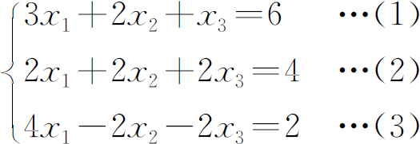
1．消元过程
消元过程可以分3步实现。第1步将（1）式除以3，把x1 的系数化为1。再将（2）式、（3）式中x1 的系数都化为零，即（2）式-2×（1）（1） 式、（3）式-4×（1）（1） 式得：
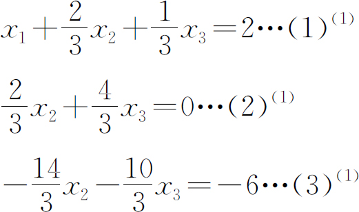
第2步将（2）（1） 式除以2/3，把x2 系数化为1。再将（3）（1） 式中x2 的系数化为零，即（3）（1） 式-（-14/3）*（2）（2） 式得：
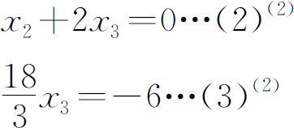
第3步将（3）（2） 式除以18/3，把x3 系数化为1，得：
x3 =-1…(3)(3)
经消元后，得到如下三角代数方程组：
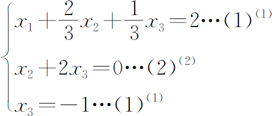
2．回代过程
由（3）（3） 式得x3 =-1，再将x3 代入（2）（2） 式得x2 =2，再将x2 和x3 代入（1）（1） 式得x1 =1。
3．用矩阵运算实现消元过程
用矩阵运算实现消元过程分为3步。第1步将方程组写成增广矩阵的形式。
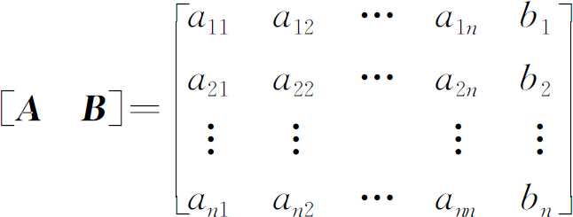
第2步对矩阵进行初等行变换，初等行变换包含如下操作：
（1）将某行同乘或同除一个非零实数；
（2）将某行加到另一行；
（3）将任意两行互换；
第3步将增广矩阵变换成上三角矩阵，即主对角线全为1，左下三角矩阵全为0。形式如下：
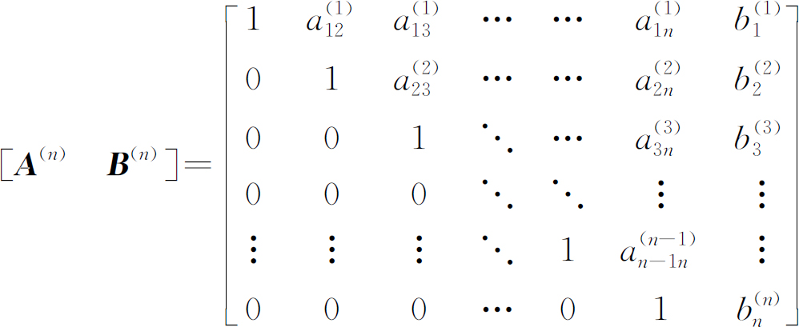
用矩阵运算实现消元过程举例如下：
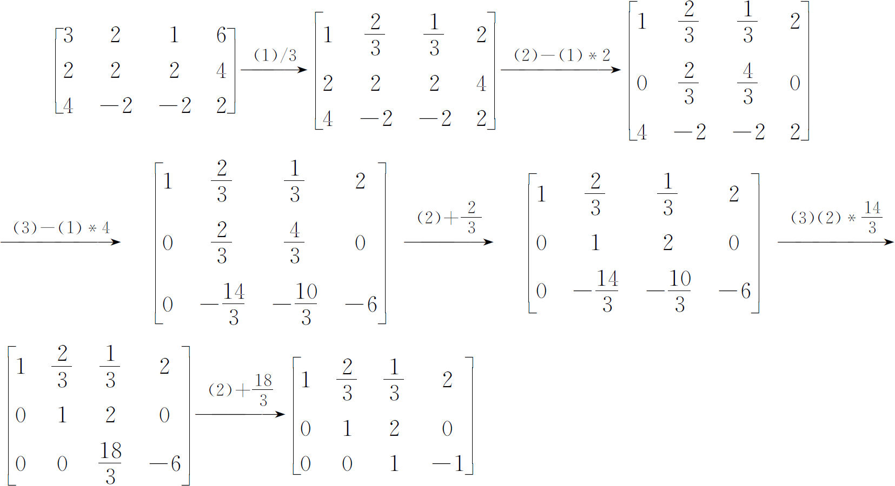
4．高斯消元的公式
综合以上讨论，不难看出，高斯消元法解方程组的公式为：
（1）消元
令：
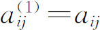
，（i，j=1，2，3，…，n）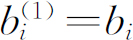
，（i=1，2，3，…，n）对k=1到n-1，若 ，进行：
，（i=k+1，k+2，…，n）
，（i，j=k+1，k+2，…，n）
，（i=k+1，k+2，…，n）
（2）回代
若
则：
，i=n-1，n-2，…，1），（j=i+1，i+2，…，n ）
5．高斯消元法的条件
消元过程要求 （i=1，2，…，n），回代过程则进一步要求 ，但就方程组Ax=b而言， 是否等于0是无法事先看出来的。
注意A的顺序主子式Di （i=1，2，…，n），在消元的过程中不变，这是因为消元所作的变换是“将某行的若干倍加到另一行”。若高斯消元法的过程进行了k-1步（ ，i＜k），这时计算的A（k） 顺序主子式：
有递推公式：
定理：高斯消元法消元过程能进行到底的充要条件是系数阵A 的1到n-1阶的顺序主子式不为0。
6．选主消元
因为在高斯消元的过程中，要做乘法和除法运算，因此会产生误差。当 很小时，此时用它作除数会导致其他元素数量级严重增加，带来误差扩散，使结果严重失真。例如：
代入得到x1 =0，x2 =1。显然，严重失真。换主元，将两行交换，如下：
代入得到x1 =1，x2 =1，答案正确。
所以，在消元的过程中，如果出现主元相差比较大的情况，应选择最大数作为主元（如图6.3-1所示方框中的最大数），甚至可以在整个矩阵中找最大数作为主元，但此时需要做列变换，要记住个分量的顺序。
图6.3-1 主元的选择
7．解的判断
设方程组的增广矩阵记为 ，则 经过初等行变换可化为如下的阶梯形矩阵（必要时可重新排列未知量的顺序）：
其中：cii ≠0（i=1，2，…，r）。于是可知：
（1）当dr+1 =0，且r=n时，原方程组有唯一解；
（2）当dr+1 =0，且r＜n时，原方程组有无穷多解；
（3）当dr+1 ≠0，原方程组无解。
求解线性代数方程组除了高斯消元法外，还常用LU分解法（三角形分解法）。LU分解法的优点是当方程组左端系数矩阵不变，仅仅是方程组右端列向量改变，即外加激励信号变化时，能够方便地求解方程组。
设n阶线性方程组A x=b。假设能将方程组左端系数矩阵A ，分解成两个三角方阵的乘积，即A =LU。其中，L为主对角线以上的元素均为零且主对角线元素均为1的矩阵，U为主对角线以下的元素均为零。
所以有：LUx =b
令：Ux =y
则：Ly =b
由A =LU，矩阵的乘法公式：
a1j =u1j ，j=1，2，…，n
ai1 =li1 u11 ，i=1，2，…，n
推出：
u1j =a1j ，j=1，2，…，n
li1 =ai1 /u11，i=1，2，…，n
这样就定出了U的第一行元素和L的第一列元素。
设已定出了U的前k-1行和L的前k-1列，现在确定U的第k行和L的第k列。由矩阵乘法：
当r>k时，lkr =0，且lkk =1，因为：
所以， j=k,k+1,…,n
同理，可推出计算L的第k列的公式：
因此，得到如下“杜利特（Doolittle）算法”：
1．将矩阵分解为A =LU，对k=1，2，…，n
2．解Ly=b
3．解Ux=y
【例6.3-1】 求解如下方程组：
【问题分析】
由公式1得出：
于是化为两个方程组：
利用公式2，3，可解得：y=（9，5，3，-1）T ，x=（0.5，2，3，-1）T 。
【例6.3-2】 维他命的配方（vitamin．*，128MB，1秒）
【问题描述】
维他命是一种好的药品，人们都需要摄入一定量的各种维生素，现在有若干种维他命，问能否利用这些维他命配制出适合人需求的各种维生素。
【输入格式】
第一行：人们需补充的V（1≤V≤25）种维生素。
第二行：V个数，第i个数为Vi ，表示人体对第i种维生素的需求量。（1≤Vi ≤1000）
第三行：已知的G（1≤G≤15）种维他命。
以下G*V的整数矩阵：第i行第j个数为Aij ，表示第i种维他命中所含的第j种维生素的含量（1≤Aij ≤1000）。
【输出格式】
第一行：输出能否配制，若能输出Yes，否则输出No
第二行：若能配制，则输出G个整数，其中第i个整数Gi，表示第i种维他命所取的数量，若有多种配置方案，输出一种即可。若不能配制，则第二行为空。
【输入样例】
4
100 200 300 400
4
50 50 50 50
30 100 100 100
20 50 150 250
50 100 150 200
【输出样例】
Yes
1 1 1 0
【问题分析】
因为不知道每种维他命的数量，如果采用枚举，很难估计每种维他命的上界，而且时间复杂度很高，下面我们尝试用解方程的方法。
设需要配制的维他命每种数量分别为x1 ，…，xn ，其中n≤15，根据题意，可列出如下方程。
用高斯消元法求解：这里，虽然x4 可取任意值，显然，表示x4 的数量与答案无关，因此x4 =0，代入，可得x3 =1，x2 =1，x1 =1，因此，原问题的解为（1，1，1，0）。
【参考程序】
#include＜bits/stdc++．h＞
using namespace std;
int n，m;
int a［27］［18］;
int v［27］;
int gcd（inta，int b）{return b？gcd（b，a%b）：a;}
int gs（）{
for（int j=1;j＜=m;j++）{
now++;
for（inti=now;i）
}
}
int main（）{
scanf（"%d"，＆n）;
for（inti=1;i＜=n;i++）
scanf（"%d"，＆v［i］）;
scanf（"%d"，＆m）;
for（inti=1;i＜=m;i++）
for（int j=1;j＜=n;j++）
scanf（"%d"，＆a［j］［i］）;
for（inti=1;i＜=n;i++）
a［i］［m+1］=v［i］;
gs（）;
return 0;
}
【例6.3-3】 化学方程式配平（chemeq．*，128MB，1秒）
【问题描述】
给出一个未配平的化学方程式，要求根据质量守恒定律对其进行配平，不需要考虑化合价问题。
【输入格式】
一行一个字符串，由字母、数字、加号、等号以及左右小括号组成，表示一个未配平的化学方程式。元素由一个大写字母紧跟若干个（可以为0个）小写字母构成，括号可以嵌套，数字只出现在元素名或右小括号的后面。整个字符串不超过200个字符，-包含的数字不超过1，000，并保证在语法上是合法的。
【输出格式】
一行一个字符串，为配平后的方程式。各项的系数也都保证不超过1，000，且所有系数的最大公约数必须为1，其中系数1必须省略。如果方程式无解，则输出“No solution”；如果有多组不成比例关系的解，则输出“Solution not unique”。
【输入样例】
Cu+HNO3=Cu（NO3）2+NO+H2O
【输出样例】
3Cu+8HNO3=3Cu（NO3）2+2NO+4H2O
【问题分析】
我们知道，化学反应遵循质量守恒定律，即反应前后原子的种类和数量保持不变。根据这一定律，采用“待定系数法”来配平化学方程式。
具体操作的过程中，我们需要给方程式中的每一项设一个待定系数，然后列出方程组。例如，对于样例中的方程式，我们分别设Cu、HNO3 、Cu（NO3 ）2、NO、H2 O的系数为x1 ,x2 ,x3 ,x4 ,x5 ，由元素Cu、H、N、O的守恒，我们可以得到方程组
但这时我们发现方程组中有5个未知数却只有4个方程，无法求出唯一确定的一组解。这是因为化学方程式中这些系数之间只是一种比例关系，我们可以令x5 =1，进而求得：
对各项系数都乘以4，就可以得到最后的结果。
一般地，我们设各项的系数分别为x1 ,x2 ,…,xn ，得到线性方程组：
我们把这些未知数的系数写成一个矩阵，即：
我们可以对这个矩阵进行这样三种基本操作：
1．交换矩阵的第i行和第j行(1≤i,j≤m,i≠j)；
2．对矩阵第i行中的每一项都乘以一个实数λ(1≤i≤m,λ≠0)；
3．把矩阵第i行中每一项的λ倍加到第j行的对应项上(1≤i,j≤m,i≠j,λ≠0)。
通过这些基本操作，我们可以把矩阵转化为如下形式：
令xn =1，这时，(-λ1 ,-λ2 ,…,-λn-1,1)就是我们所要求的解。一旦出现[0 0 0 … 1]这样的行就说明无解，如果-λ1 ,-λ2 ,…,-λn-1这n-1个数中有负数，则也是无解，而如果矩阵（i，i）（i＜m）为0，则说明解不唯一。
其实，在进行以上这些操作的过程中，我们采用的思想就是初中时学过的加减消元法，这个过程的时间复杂度是Θ(n3 )。本题还需要注意的地方是矩阵中的元素必须用分数来表示，这样才能保证计算是精确的。另外，本题还需要把化学方程式转化为线性方程组，难点在于如何去掉括号。实现的方法有很多，可以用递归的方式来去掉括号，也可以通过一个堆栈来实现。
【参考程序】
#include＜bits/stdc++．h＞
using namespace std;
const double eps=1e-10;
intn，m，hash［1＜＜20］;
double a［205］［205］;
char z［205］;
intanw，now;
int getnumber（int＆i）{
int s=0;
while（'0'＜=z［i］＆＆z［i］＜=′9′）
s=（s＜＜3）+（s＜＜1）+z［i++］-′0′;
return max（s，1）;
}
int getstr（int＆i）{
if（z［i］＞′Z′｜｜z［i］＜′A′）
return-1;
int s=z［i++］;
while（′a′＜=z［i］＆＆z［i］＜=′z′）
s=s*10007+z［i++］;
return s＆（（1＜＜20）-1）;
}
void countt（intl，intr，int f）{
if（l==r）return;
inti=l，j=r;
while（i＜r-1＆＆z［i］!=′（′） i++;
while（j＞l＆＆z［j］!=′）′） j--;
if（z［i］==′（′）{
countt（l，i，f）;
int w=j+1，s=getnumber（w）;
countt（i+1，j，f*s）;
countt（w，r，f）;
return;
}
for（i=l;i＜r;）{
int str=getstr（i）;
if（!hash［str］）
hash［str］=++n;
int hs=hash［str］;
a［hs］［m］+=f*getnumber（i）;
}
}
void init（）{
scanf（"%s"，z）;
int l=strlen（z），f=1;
z［l］=′#′;
for（inti=0;i＜l;）{
int j=i;
while（z［j］!=′+′＆＆z［j］!=′=′＆＆z［j］!=′#′） j++;
m++;
countt（i，j，f）;
if（z［j］==′=′）
f*=-1;
i=j+1;
}
}
voidgs（）{
for（int j=1，i;j＜m;j++）{
for（i=now+1;fabs（a［i］［j］）＜eps＆＆i＜=n;i++）;
if（i＞n）{
anw=-1;
continue;
}
now++;
for（int k=1;k＜=m;k++）
swap（a［i］［k］，a［now］［k］）;
doubless=a［now］［j］;
for（int k=1;k＜=m;k++）
a［now］［k］/=ss;
for（i=1;i＜=n;i++）
if（fabs（a［i］［j］）＞eps＆＆i!=now）{
double s=a［i］［j］;
for（int k=1;k＜=m;k++）
a［i］［k］-=a［now］［k］*s;
}
}
}
intans［205］;
void solve（）{
for（inti=now+1;i＜=n;i++）
if（fabs（a［i］［m］）＞eps）{
printf（"No solution＼n"）;
return;
}
if（anw==-1）printf（"Solution not unique＼n"）;
for（inti=1;i＜=1000;i++）{
int p=1;
for（int j=1;j＜m;j++）{
if（fabs（int（a［j］［m］*i*-1+0.5）-a［j］［m］*i*-1）＞eps）
p=0;
}
if（p==0）continue;
for（int j=1;j＜m;j++）
ans［j］=int（a［j］［m］*i*-1+0.5）;
ans［m］=i;
if（ans［1］!=1）printf（"%d"，ans［1］）;
int l=strlen（z），k=1;
for（int j=0;j＜l-1;j++）{
putchar（z［j］）;
if（z［j］==′=′｜｜z［j］==′+′）
printf（"%d"，ans［++k］）;
}
break;
}
}
int main（）{
init（）;
gs（）;
solve（）;
return 0;
}
给定一个无向图G，如何求它的生成树的个数t（G）呢？Matrix-Tree定理是解决生成树计数问题最有力的武器之一。它首先于1847年被Kirchhoff证明。在介绍定理之前，我们首先明确几个概念：
1．G的度数矩阵D［G］是一个n*n的矩阵，并且满足：当i≠j时，dij =0；当i=j时，dij 等于vi 的度数。
2．G的邻接矩阵A［G］也是一个n*n的矩阵，并且满足：如果vi 、vj 之间有边直接相连，则aij =1，否则为0。
定义G的Kirchhoff矩阵（也称为拉普拉斯算子）C［G］为C［G］=D［G］-A［G］，则Matrix-Tree定理可以描述为：
G的所有不同的生成树的个数等于其Kirchhoff矩阵C［G］任何一个n-1阶主子式的行列式的绝对值。所谓n-1阶主子式，就是对于r（1≤r≤n），将C［G］的第r行、第r列同时去掉后得到的新矩阵，用Cr ［G］表示。
下面,举例解释Matrix-Tree定理。如下图6.4-1所示，G是一个由5个点组成的无向图。
图6.4-1 无向图
根据定义，它的Kirchhoff矩阵C［G］为：
我们取r=2，则有：
这11棵生成树如图6.4-2所示：
图6.4-2 生成树
这个定理看起来非常“神奇”，只需要计算一个矩阵的行列式，就可以得到这个图不同的生成树的个数!这是为什么呢？让我们尝试着来证明一下吧。
不难看出，这个定理的关键是图的Kirchhoff矩阵。这个矩阵有什么特殊的性质呢？经过分析，我们可以发现：
1．对于任何一个图G，它的Kirchhoff矩阵C的行列式总是0。这是因为C每行每列所有元素的和均为0。
2．如果G是不连通的，则它的Kirchhoff矩阵C的任一个主子式的行列式均为0。
证明：如果G中存在k（k＞1）个连通分量G1 ，G2 ，…，Gk ，那么，我们可以重新安排C的行和列使得属于G1 的顶点首先出现，然后是G2 …。回忆行列式的性质2，设我们一共进行了t次行交换，显然，我们同样需要进行t次列交换。因此，我们总共进行了2t次交换，所以，行列式的符号没有改变。重新安排后的矩阵如图6.4-3所示：
图6.4-3 交换后的矩阵
带方框的Gi 表示了C［Gi ］。注意在方框以外的地方都是0因为任意两个连通分量之间没有边相连。设r是第i个连通分量中的第j个顶点，那么
3．如果G是一颗树，那么它的Kirchhoff矩阵C的任一个n-1阶主子式的行列式均为1。
证明：为了证明这条重要的性质，我们通过不断的变换Cr ［G］从而得到一个上三角矩阵并且使得主对角线上所有的数字都是1。
第一步：我们把所有的顶点按照在树上离vr 的距离从近至远排列。首先是vr ，然后是离vr 距离为1的点，接下来是离vr 距离为2的点…。距离相同的点可以任意排列。我们按照这个顺序将所有的定点重新编号。同时，把以r为根的有根树上vi 的父结点vj 称为vi 的父亲，显然，在刚才得到的顺序中，vj 出现在vi 之前。
第二步：将Cr ［G］的n-1行和n-1列按照刚才得到的顺序重新排列。因为行列都需要交换，所有总交换次数是偶数，Cr ［G］的行列式不边。
第三步：按照刚才得到的顺序的逆序处理，对于每个i，如果vi 的父亲vj 不等于vr ，则把第i列加到第j列上去。
这样处理过之后，我们来看一下现在的Cr ［G］是否和我们的希望相同。我们通过归纳法来证明。显然，最后一列符合要求，因为最后一个点只和它的父亲之间有边，它的度为1。假设当前处理的是第i列，并且第i+1至第n-1列都符合要求。我们设vi 的父亲是vj ，它有k个孩子vi1 ,vi2 …,vik ，显然，只有第i1 ，i2 ，…，ik 列才会加到第i列上来。所有这些列，都在第i行有个-1而在对角线上有个1，而第i列在第j、i1 ，i2 ，…，ik 行上为-1而在第i行上为k+1。每一列加上来的时候，第i行第i列减一同时与之相对的那一列加一变为0。最后第i行第i列变为1，第i1 ，i2 ，…，ik 行变为0。也就是说，最后Cr ［G］会变成上三角矩阵并且主对角线上所有的数字都是1。这就证明了我们的结论。
在证明Matrix-Tree定理的过程中，我们使用了无向图G的关联矩B。B是一个n行m列的矩阵，行对应点而列对应边。B满足，如果存在一条边e={vi ，vj }，那在e所对应的列中，vi 和vj 所对应的那两行，一个为1、另一个为-1，其他的均为0。至于谁是1谁是-1并不重要，如图6.4-4所示。
图6.4-4 关联矩阵
接下来，我们考察BBT 。容易证明，（BBT ）ij 等于B的第i行与第j行的点积。所以，当i=j时，（BBT ）ij 等于与vi 相连的边的个数，即vi 的度数；而当i≠j时，如果有一条连接vi 、vj 的边，则（BBT ）ij 等于-1，否则等于0。这与Kirchhoff矩阵的定义完全相同!因此，我们得出：C=BBT !也就是说，我们可以将C的问题转化到BBT 上来，这样做有什么用呢？
设Br 为B去掉第r行后得到的新矩阵，易知 。根据Binet-Cauchy公式，我们可以得到：
是把Br 中属于x的列抽出后形成的新矩阵。我们注意到，当x中的边形成环时，总有 。例如，如果新图中存在一个大小为3的环，那么我们可以重新安排Bxr，如6.4-5图所示：
图6.4-5 重排后的矩阵
这样， 等于左上角3阶子式的行列式乘以右下角n-4阶矩阵的行列式。而左上角的3阶子式是退化的，它每行每列的和都是0。因此 也等于0。类似的证明可以推广到环的大小任意的情况。
显然， 可以看成是仅由所有的顶点和属于x的边构成的新图的Kirchhoff矩阵的一个n-1阶主子式。根据图的Kirchhoff矩阵的性质，如果将所有属于x的n-1条边加入图中后形成一颗树，那么 为1；而如果没有形成树，则必然存在一个环，那么 。也就是说，我们考察边集所有大小为n-1的子集，如果这个子集中的边能够形成一颗树，那么我们的答案加1，否则不变。这就恰好等于原图生成树的个数!因此，我们成功地证明了Matrix-Tree定理!
如果图中有重边，Matrix-Tree定理同样适用，具体的证明方法类似，请读者自己思考。因为计算行列式的时间复杂度为O（n3 ），因此，生成树的计数也可以在O（n3 ）的时间内完成。
【例6.4-1】 小Z的房间（room．*，256MB，1秒）
【问题描述】
你突然有了一个大房子，房子里面有一些房间。事实上，你的房子可以看做是一个包含n*m个格子的格状矩形，每个格子是一个房间或者是一个柱子。在一开始的时候，相邻的格子之间都有墙隔着。
你想要打通一些相邻房间的墙，使得所有房间能够互相到达。在此过程中，你不能把房子给打穿，或者打通柱子（以及柱子旁边的墙）。同时，你不希望在房子中有小偷的时候会很难抓，所以你希望任意两个房间之间都只有一条通路。现在，你希望统计一共有多少种可行的方案。
【输入格式】
输入文件的第一行有两个数，分别表示n和m。
接下来n行，每行m个字符，每个字符都会是“．”或者“*”，其中“．”代表房间，“*”代表柱子。
【输出格式】
输出一行一个整数，表示合法的方案数。
【输入样例1】
2
．．
．．
【输出样例1】
4
【输入样例2】
2
*．
．*
【输出样例2】
0
【数据规模】
对于20%的数据满足：n，m≤3；
对于50%的数据满足：n，m≤5；
对于100%的数据满足：n，m≤9；
另外：有40%的数据保证min（n，m）≤3；有30%的数据保证不存在柱子。
【问题分析】
求解生成树个数，使用Matrix-Tree定理。
高斯消元解行列式时会出现除法，利用欧几里德算法。具体来说，高斯消元时进行初等变换，把某行乘以某个数字加到另一行上，目的是使得目标行某个位置为0，实数下算出对应位置比例一次变换解决，模意义下，设对应位置数值为a，b使得b为0，则使b所在行+a所在行*b/a使得（a，b）->（a，b%a）交换2行，做相同操作，直到a，b中出现0为止，实现了消去目的。
【参考程序】
#include＜bits/stdc++．h＞
using namespace std;
int read（）{
int s=0，f=1;char ch=getchar（）;
while（ch＜′0′｜｜ch＞′9′）{if（ch==′-′）f=-1;ch=getchar（）;}
while（ch＞=′0′＆＆ch＜=′9′）{s=（s＜＜1）+（s＜＜3）+ch-′0′;ch=getchar（）;}
return s*f;
}
int n，m，S，mod=1000000000;
int s［11］［11］，a［82］［82］;
char z［11］［11］;
int gs（）{
S--;
for（int i=1;i＜=S;i++）
for（int j=1;j＜=S;j++）
a［i］［j］=（a［i］［j］+mod）%mod;
long long ans=1;
for（int j=1;j＜=S;j++）{
for（int i=j+1;i＜=S;i++）
while（a［i］［j］）{
long long t=a［j］［j］/a［i］［j］;
for（int k=j;k＜=S;k++）
a［j］［k］=（a［j］［k］-t*a［i］［k］%mod+mod）%mod，
swap（a［i］［k］，a［j］［k］）;
ans*=-1;
}
ans=ans*a［j］［j］%mod;
}
return （ans+mod）%mod;
}
int main（）{
n=read（），m=read（）;
for（int i=1;i＜=n;i++）
scanf（"%s"，＆z［i］［1］）;
for（int i=0;i＜=n+1;i++）
for（int j=0;j＜=m+1;j++）
if（i==0｜｜j==0｜｜i==n+1｜｜j==m+1）
z［i］［j］=′*′;
for（int i=1;i＜=n;i++）
for（int j=1;j＜=m;j++）
if（z［i］［j］==′．′）{
s［i］［j］=++S;
if（z［i-1］［j］==′．′）a［s［i-1］［j］］［s［i］［j］］=1;
if（z［i-1］［j］==′．′）a［s［i］［j］］［s［i-1］［j］］=1;
if（z［i］［j-1］==′．′）a［s［i］［j-1］］［s［i］［j］］=1;
if（z［i］［j-1］==′．′）a［s［i］［j］］［s［i］［j-1］］=1;
}
for（int i=1;i＜=S;i++）
for（int j=1;j＜=S;j++）
if（a［i］［j］＆＆i!=j）
a［i］［i］++;
printf（"%d＼n"，gs（））;
return 0;
}
【例6.4-2】 国王的烦恼（king．*，256MB，1秒）
【问题描述】
Byteland的国王Byteotia最近很是烦恼，他的国家遭遇到了洪水的袭击!百年未遇的洪水冲毁了Byteland许多重要的道路，使得整个国家处于瘫痪状态。Byteland由n座城市组成（1≤n≤500），任何两个不同城市之间都有道路相连。为了尽快使国家恢复正常秩序，Byteotia组织了专家进行研究，列举出了所有可以正常同行的道路（其他的道路可能还在洪水中）。其中有的已经被冲毁，需要重新修复;有的则可以继续使用。很奇怪的是，所有可以继续使用的道路并没有形成环。为了最大限度的节省时间，Byteotia希望只修复最少的道路就可以使得整个国家连通。Byteotia本来准备对每一种方案进行评估，选择最优的，不过很快他发现方案的个数实在是太多了。因此，他找到了你——Byteland最优秀的计算机专家，帮他计算一下所有可能的修复方案的个数，你只需要输出答案对1000，000，007取模的结果。
【输入样例1】
4
0 1 1 1
1 0 2 1
1 2 0 1
1 1 1 0
【输出样例1】
8
【输入样例2】
5
0 1 1 1 1
1 0 2 1 1
1 2 0 1 1
1 1 1 0 0
1 1 1 0 0
【输出样例2】
30
【问题分析】
本题乍看起来很难，因为要求统计修复道路个数最少的方案的个数，同时还有不需要修复的道路需要考虑。仔细分析后发现题目中一个十分重要的条件就是：所有可以继续使用的道路并没有形成环!这就为我们的解题创造了条件。我们都知道，让一个n个点的图连通最少需要n-1条边，而这些边形成一颗树，而树的一个重要性质就是无环，因此所有可以继续使用的道路都一定存在于最后得到的树中。这样，我们就成功地将问题转化为：求一个图生成树的个数，其中有某些边必选。
这是一道生成树的计数问题。但是，由于必选边的存在，使得我们无法直接应用Matrix-Tree定理。应该怎么办呢？
我们知道，如果我们要求生成树中必须包含一条边e，那么整个图G生成树的个数t（G）就等于t（G-e），即将e收缩后得到的新图的生成树的个数。因此，我们需要：
1．将所有的必选边压缩；
2．求压缩后的新图的生成树的个数。
压缩一条边的时间复杂度为Θ（n），而最多只有n-1条边需要压缩，因此，这一步的复杂度为Θ（n2 ）。根据前面的分析，计算一个图生成树的个数的时间复杂度为Θ（n3 ）。因此，我们成功解决了整个问题，时间复杂度为Θ（n3 ）。
【参考程序】
#include＜bits/stdc++．h＞
using namespace std;
int read（）{
int s=0，f=1;char ch=getchar（）;
while（ch＜′0′｜｜ch＞′9′）{if（ch==′-′）f=-1;ch=getchar（）;}
while（ch＞=′0′＆＆ch＜=′9′）{s=（s＜＜1）+（s＜＜3）+ch-′0′;ch=getchar（）;}
return s*f;
}
intn，S，mod=1000000007;
int p［505］［505］;
longlong a［505］［505］;
int gs（）{
S--;
for（int i=1;i＜=S;i++）
for（int j=1;j＜=S;j++）
a［i］［j］=（a［i］［j］+mod）%mod;
long long ans=1;
for（int j=1;j＜=S;j++）{
for（int i=j+1;i＜=S;i++）
while（a［i］［j］）{
long long t=a［j］［j］/a［i］［j］;
for（int k=j;k＜=S;k++）
a［j］［k］=（a［j］［k］-t*a［i］［k］%mod+mod）%mod，
swap（a［i］［k］，a［j］［k］）;
ans*=-1;
}
ans=ans*a［j］［j］%mod;
}
return （ans+mod）%mod;
}
int f［505］;
int gf（int x）{return x==f［x］？x∶f［x］=gf（f［x］）;}
int w［505］;
int main（）{
n=read（）;
for（int i=1;i＜=n;i++）f［i］=i;
for（int i=1;i＜=n;i++）
for（int j=1;j＜=n;j++）{
p［i］［j］+=read（）;
if（p［i］［j］==2）
if（gf（i）!=gf（j））
f［f［i］］=f［j］;
}
for（inti=1;i＜=n;i++）
w［i］=w［i-1］+（gf（i）==i）;
for（inti=1;i＜=n;i++）
for（int j=1;j＜=n;j++）
if（p［i］［j］==1）
if（gf（i）!=gf（j））
a［w［gf（i）］］［w［gf（j）］］--;
S=w［n］;
for（inti=1;i＜=S;i++）
for（int j=1;j＜=S;j++）
if（a［i］［j］＆＆i!=j）
a［i］［i］-=a［i］［j］;
printf（"%d＼n"，gs（））;
return 0;
}
1．普通递归关系（recur．*，128MB，1秒）
【问题描述】
考虑以下定义在非负整数n上的递归关系：
给定f0 ,f1 ,a，b和n，请你写一个程序计算F(n)，可以假定F(n)是绝对值不超过109 的整数（四舍五入）。
【输入格式】
输入文件一行，依次给出5个数,f0 ,f1 ,a,b和n,f0 ,f1 是绝对值不超过109 ，n是非负整数，不超过109 。另外，a、b是满足上述条件的实数，且|a|,|b|≤106 。
【输出格式】
输出一行一个数F(n)。
【输入输出样例】
| recur．in | recur．out |
| 0 1 1 1 20 | 6765 |
| 0 1 -1 0 1000000000 | -1 |
| -1 1 4 -3 18 | 387420487 |
2．马步方阵（mbfz．*，128MB，1秒）
【问题描述】
输入N（N为小于等于20的奇数），输出一个N阶奇数“马步方阵”。如N=5，输出如下：
24 15 1 17 8
5 16 7 23 14
6 22 13 4 20
12 3 19 10 21
18 9 25 11 2
3．拐角方阵（gjfz．*，128MB，1秒）
【问题描述】
输入N（N≤20），输出一个N阶“拐角方阵”。如N=5，输出如下：
1 1 1 1 1
1 2 2 2 2
1 2 3 3 3
1 2 3 4 4
1 2 3 4 5
4．回旋方阵（hxfz．*，128MB，1秒）
【问题描述】
输入N（N≤20），输出一个N阶“回旋方阵”。如N=7，输出如下：
1 1 1 1 1 1 1
1 2 2 2 2 2 1
1 2 3 3 3 2 1
1 2 3 4 3 2 1
1 2 3 3 3 2 1
1 2 2 2 2 2 1
1 1 1 1 1 1 1
5．斜线蛇形方阵（xxsxfz．*，128MB，1秒）
【问题描述】
输入N（N≤20），输出一个N阶“斜线蛇形方阵”。如N=5，输出如下：
1 2 6 7 15
3 5 8 14 16
4 9 13 17 22
10 12 18 21 23
11 19 20 24 25
6．螺旋方阵（lxfz．*，128MB，1秒）
【问题描述】
输入N（N≤20），输出一个N阶“螺旋方阵”。如N=5，输出如下：
9 10 11 12 13
8 21 22 23 14
7 20 25 24 15
6 19 18 17 16
5 4 3 2 1
7．求和（sum．*，128MB，1秒）
【问题描述】
考虑包含N个点M条边的无向图G=（V，E），关联矩阵An*m =（aij ）n*m ，如果顶点i是第j条边的一个端点，则aij =1，否则aij =0。求矩阵A*AT 的元素和和矩阵AT *A的元素和。
8．Just Pour the Water（ZOJ2974）
【问题描述】
Shirly is a very clever girl．Now she has two containers （A and B），each with some water．Every minute，she pours half of the water in A into B，and simultaneous pours half of the water in B into A．As the pouring continues，she finds it is very easy to calculate the amount of water in A and B at any time．It is really an easy job ：）．
But now Shirly wants to know how to calculate the amount of water in each container if there are more than two containers．Then the problem becomes challenging．
Now Shirly has N （2≤N≤20）containers （numbered from 1 to N）．Every minute，each container is supposed to pour water into another K containers （K may vary for different containers）．Then the water will be evenly divided into K portions and accordingly poured into anther K containers．Now the question is： how much water exists in each container at some specified time？
For example，container 1 is specified to pour its water into container 1，2，3．Then in every minute，container 1 will pour its 1/3 of its water into container 1，2，3 separately （actually，1/3 is poured back to itself，this is allowed by the rule of the game）．
【输入格式】
Standard input will contain multiple test cases．The first line of the input is a single integer T （1≤T≤10）which is the number of test cases．And it will be followed by T consecutive test cases．
Each test case starts with a line containing an integer N，the number of containers．The second line contains N floating numbers，denoting the initial water in each container．The following N lines describe the relations that one container（from 1 to N）will pour water into the others．Each line starts with an integer K （0≤K≤N）followed by K integers．Each integer （［1，N］）represents a container that should pour water into by the current container．The last line is an integer M （1≤M≤1，000，000，000）denoting the pouring will continue for M minutes．
【输出格式】
For each test case，output contains N floating numbers to two decimal places，the amount of water remaining in each container after the pouring in one line separated by one space．There is no space at the end of the line．
【输入样例】
1
2
100.00 100.00
1 2
2 1 2
2
【输出样例】
75.00 125.00
【特别说明】
the capacity of the container is not limited and all the pouring at every minute is processed at the same time．
9．图形变换（shape．*，128MB，1秒）
【问题描述】
平面上有n个点需要依次进行m个变换处理。变换的规则有4种，分别为：
（1）平移（M）：按照向量V =(x,y)对点进行平移，即(x0 ,y0 )→(x0 +x,y0 +y)。
（2）缩放（Z）：以原点为参考，按照比例λ对点进行缩放，(x0 ,y0 )→(λx0 ,λy0 )即。
（3）翻转（F）：把点按照x轴或者y轴进行翻转，即(x0 ,y0 )→(x0 ,-y0 )或(-x0 ,y0 )。
（4）旋转（R）：使点绕原点旋转a度（a为正时逆时针旋转，为负时顺时针旋转），离原点的距离不变。
其中括号中的字母为该变换的指令代码。编程序依次输出变换后各点的坐标。
【输入格式】
第1行一个整数m(1≤m≤100000)和n(1≤n≤100000)。
第2行至第m+1行，每行代表一个变换指令，为Mxy、Zλ、Fk或者Ra，其中x,y,λ,a均为绝对值不超过10000的实数，k为0（表示按照x轴翻转）或者1（表示按照y轴翻转）。
第m+2行至第m+n+1行，每行两个实数x,y，表示一个点的坐标，其中x,y均为绝对值不超过10000的实数。
【输出格式】
第1行至第n行，每行两个实数x,y，为变换后点的坐标，保留4位小数。
【输入样例】
4 1
M 0 1
Z 0.5
R 45
F 0
2 1
【输出样例】
0.0000
1．4142
10．始祖鸟（src．*，256MB，1秒）
【问题描述】
最近，进香河地带出现了一家“始祖鸟专卖店”，然而这并不只是一时的心血来潮。
早在远古时期，进香河地带就以其秀美的环境和适宜的温度吸引了成群的始祖鸟。始祖鸟是一种团结的鸟类，它们总是通过各种方式来增强种群内部的交流，聚会则是其中之一。因为聚会不但可以增强朋友之间的友谊，而且可以认识新的朋友。
现在有N只始祖鸟，我们从1开始编号。对于第i只始祖鸟，有Mi 个认识的朋友，它们的编号分别是Fi，1 ，Fi，2 ，…，Fi，Mi 。朋友的认识关系是单向的，也就是说如果第s只始祖鸟认识第t只始祖鸟，那么第t只始祖鸟不一定认识第s只始祖鸟。
聚会的地点分为两处，一处在上游，一处在下游。对于每一处聚会场所，都必须满足对于在这个聚会场所中的始祖鸟，有恰好有偶数个自己认识的朋友与之在同一个聚会场所中。当然，每一只始祖鸟都必须在两处聚会场所之一。
现在需要你给出一种安排方式。你只需要给出在上游的始祖鸟编号，如果有多组解，请输出任何一组解。
【输入格式】
输入数据包含N+1行，第一行是数字N，代表始祖鸟的个数。
之后的N行，第i+1行的第一个数字是M［i］，表示第i只鸟的朋友个数。之后有M［i］个数字依次为F［i］［1］，F［i］［2］，…，F［i］［M［i］］表示第i只始祖鸟朋友的标号。
【输出格式】
输出数据包含2行，第一行有一个非负整数k，表示在上游参加聚会的始祖鸟个数。第二行有k个正整数，表示在这个k只始祖鸟的编号，你可以以任意顺序输出这些编号。如果无法满足要求，只输出一行“Impossible”。
【样例输入】
5
3 2 3 4
2 1 3
4 2 1 4 5
2 1 3
1 3
【样例输出】
3
1 2 3
【样例说明】
如图6.5-1所示。
图6.5-1 样例示意图
【数据规模】
对于10%的数据满足：N≤10；
对于20%的数据满足：N≤50；
对于50%的数据满足：N≤200；
对于100%的数据满足：1≤N≤2000；
11．员工组织（UVA10766）
【问题描述】
Jimmy在公司里负责人员的分级工作，他最近遇到了一点小麻烦。为了提高公司工作的效率，董事会决定对所有的员工重新分级!
图6.5-2 公司分级结构图
分级后的情况如图6.5-2所示，A直接领导B和D，D直接领导C。具体来说，除了一个总经理例外，其他所有的员工有且只有一个直接领导。由于员工直接的人际关系，可能出现a和b都不愿意让对方成为自己直接领导的情况。公司里的n位员工1-n编号，并且董事会已经决定让标号为k的员工担任总经理。Jimmy的任务就是一共有多少种不同的员工分级方案。1≤n≤50。
12．求最大异或值（SGU275）
【问题描述】
给定n个非负整数A1 ，A2 ，…，An 的集合，要你求出一个子集Ai1 ，Ai2 ，…，Aik ，1≤i1 ＜i2 ＜…＜ik ≤n≤100，使得Ai1 XOR Ai2 XOR Ai3 … XOR Aik 的值最大。Ai ≤1018 。
13．Puzzle（SGU260）
【问题描述】
有N个格子，每个格子可能是黑色或白色。目前有N种操作方式，第i种操作可以将Ai，1 ，Ai，2， ，…Ai，ki 这Ki 个格子的颜色同时改变（从黑到白或者从白到黑）。现在给出N个格子的初始状态，与这N种操作。请你判断是不是可以通过N种操作，将所有格子变成同一种颜色。如果可以请输出一种方案。1≤n≤200。
14．Convex area（POJ2974）
【问题描述】
A 3-dimensional shape is said to be convex if the line segment joining any two points in the shape is entirely contained within the shape．Given a general set of points X in 3-dimensional space，the convex hull of X is the smallest convex shape containing all the points．
For example，consider X={（0，0，0），（10，0，0），（0，10，0），（0，0，10）}．The convex hull of X is the tetrahedron with vertices given by X．Note that the tetrahedron contains the point （1，1，1），so even if this point were added to X，the convex hull would not change．
Given X，your task is to find the surface area of the convex hull of X，rounded to the nearest integer．
NOTE： The convex hull of any point set will have polygonal faces．For this problem，you may assume there will be at most 3 points in X on any face of the convex hull．
【输入格式】
The input test file will contain multiple test cases，each of which begins with an integer n （4≤n≤25）indicating the number of points in X．This is followed by n lines，each containing 3 integers giving the x，y and z coordinate of a single point．All coordinates are between-100 and 100 inclusive．The end-of-file is marked by a test case with n=0 and should not be processed．
【输出格式】
For each test case，write a single line with the surface area of the convex hull of the given points．The answer should be rounded to the nearest integer （e．g．，2.499 rounds to 2，but 2.5 rounds to 3）．
【输入样例】
5
0 0 0
10 0 0
0 10 0
0 0 10
1 1 1
9
0 0 0
2 0 0
2 2 0
0 2 0
1 1 2
1 1 -2
1 1 -1
1 1 0
1 1 1
0
【输出样例】
237
18
【样例说明】
To avoid ambiguities due to rounding errors，the judge tests have been constructed so that all answers are at least 0.001 away from a decision boundary （i．e．，you can assume that the area is never 2.4997）．
15．SETI（POJ2065）
【问题描述】
For some years，quite a lot of work has been put into listening to electromagnetic radio signals received from space，in order to understand what civilizations in distant galaxies might be trying to tell us．One signal source that has been of particular interest to the scientists at Universit＇e de Technologie Spatiale is the Nebula Stupidicus．
Recently，it was discovered that if each message is assumed to be transmitted as a sequence of integers a0，a1，．．．an-1 the function （mod p）always evaluates to values 0≤f（k）≤26 for 1≤k≤n，provided that the correct value of p is used．n is of course the length of the transmitted message，and the ai denote integers such that 0≤ai ＜p．p is a prime number that is guaranteed to be larger than n as well as larger than 26．It is，however，known to never exceed 30 000．
These relationships altogether have been considered too peculiar for being pure coincidences，which calls for further investigation．
The linguists at the faculty of Langues et Cultures Extraterrestres transcribe these messages to strings in the English alphabet to make the messages easier to handle while trying to interpret their meanings．The transcription procedure simply assigns the letters a．．z to the values 1．．26 that f （k）might evaluate to，such that 1=a，2=b etc．The value 0 is transcribed to '*' （an asterisk）．While transcribing messages，the linguists simply loop from k=1 to n，and append the character corresponding to the value of f （k）at the end of the string．
The backward transcription procedure，has however，turned out to be too complex for the linguists to handle by themselves．You are therefore assigned the task of writing a program that converts a set of strings to their corresponding Extra Terrestial number sequences．
【输入格式】
On the first line of the input there is a single positive integer N，telling the number of test cases to follow．Each case consists of one line containing the value of p to use during the transcription of the string，followed by the actual string to be transcribed．The only allowed characters in the string are the lower case letters 'a'．．'z' and '*' （asterisk）．No string will be longer than 70 characters．
【输出格式】
For each transcribed string，output a line with the corresponding list of integers，separated by space，with each integer given in the order of ascending values of i．
【输入样例】
3
31 aaa
37 abc
29 hello*earth
【输出样例】
1 0 0
0 1 0
8 13 9 13 4 27 18 10 12 24 15
16．The Clocks（POJ1166）
【问题描述】
图6.5-3
There are nine clocks in a 3*3 array （图6.5-3）．The goal is to return all the dials to 12 o'clock with as few moves as possible．There are nine different allowed ways to turn the dials on the clocks．Each such way is called a move．Select for each move a number 1 to 9．That number will turn the dials 90' （degrees）clockwise on those clocks which are affected according to图6.5-4 below．
图6.5-4
【输入格式】
Your program is to read from standard input．Nine numbers give the start positions of the dials．0=12 o'clock，1=3 o'clock，2=6 o'clock，3=9 o'clock．
【输出格式】
Your program is to write to standard output．Output a shortest sorted sequence of moves （numbers），which returns all the dials to 12 o'clock．You are convinced that the answer is unique．
【输入样例】
3 3 0
2 2 2
2 1 2
【输出样例】
4 5 8 9
17．EXTENDED LIGHTS OUT（POJ1222）
【问题描述】
In an extended version of the game Lights Out，is a puzzle with 5 rows of 6 buttons each （the actual puzzle has 5 rows of 5 buttons each）．Each button has a light．When a button is pressed，that button and each of its （up to four）neighbors above，below，right and left，has the state of its light reversed．（If on，the light is turned off; if off，the light is turned on．）Buttons in the corners change the state of 3 buttons; buttons on an edge change the state of 4 buttons and other buttons change the state of 5．For example，if the buttons marked X on the left below were to be pressed，the display would change to the image on the right．
图6.5-5
The aim of the game is，starting from any initial set of lights on in the display，to press buttons to get the display to a state where all lights are off．When adjacent buttons are pressed，the action of one button can undo the effect of another．For instance，in the display below，pressing buttons marked X in the left display results in the right display．Note that the buttons in row 2 column 3 and row 2 column 5 both change the state of the button in row 2 column 4，so that，in the end，its state is unchanged．
图6.5-6
Note：
1．It does not matter what order the buttons are pressed．
2．If a button is pressed a second time，it exactly cancels the effect of the first press，so no button ever need be pressed more than once．
3．As illustrated in the second diagram，all the lights in the first row may be turned off，by pressing the corresponding buttons in the second row．By repeating this process in each row，all the lights in the first four rows may be turned out．Similarly，by pressing buttons in columns 2，3 ？，all lights in the first 5 columns may be turned off．
Write a program to solve the puzzle．
【输入格式】
The first line of the input is a positive integer n which is the number of puzzles that follow．Each puzzle will be five lines，each of which has six 0 or 1 separated by one or more spaces．A 0 indicates that the light is off，while a 1 indicates that the light is on initially．
【输出格式】
For each puzzle，the output consists of a line with the string： "PUZZLE #m"，where m is the index of the puzzle in the input file．Following that line，is a puzzle-like display （in the same format as the input）．In this case，1's indicate buttons that must be pressed to solve the puzzle，while 0 indicate buttons，which are not pressed．There should be exactly one space between each 0 or 1 in the output puzzle-like display．
【输入样例】
2
0 1 1 0 1 0
1 0 0 1 1 1
0 0 1 0 0 1
1 0 0 1 0 1
0 1 1 1 0 0
0 0 1 0 1 0
1 0 1 0 1 1
0 0 1 0 1 1
1 0 1 1 0 0
0 1 0 1 0 0
【输出样例】
PUZZLE #1
1 0 1 0 0 1
1 1 0 1 0 1
0 0 1 0 1 1
1 0 0 1 0 0
0 1 0 0 0 0
PUZZLE #2
1 0 0 1 1 1
1 1 0 0 0 0
0 0 0 1 0 0
1 1 0 1 0 1
1 0 1 1 0 1